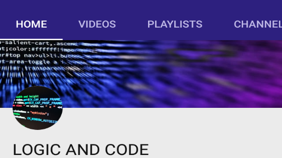
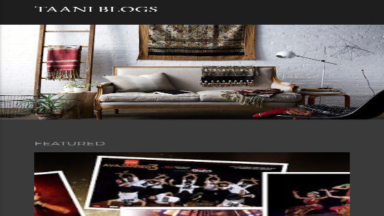
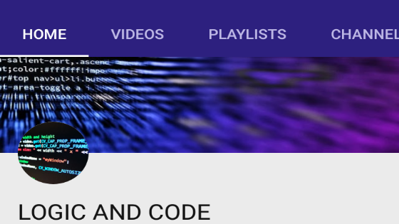
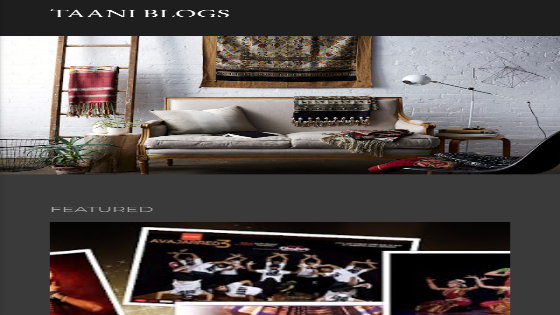
 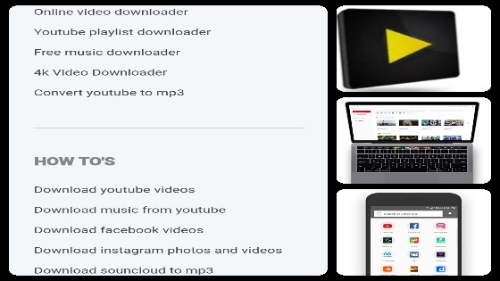
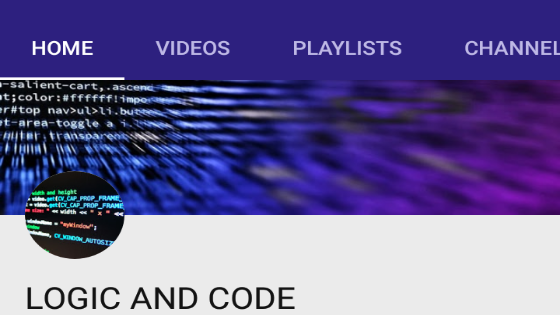
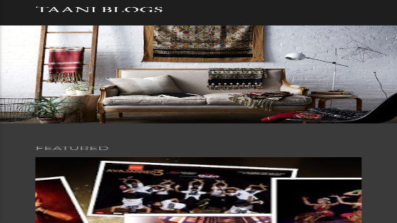
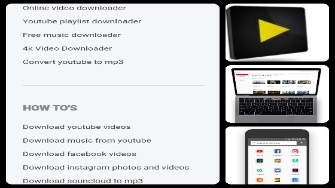
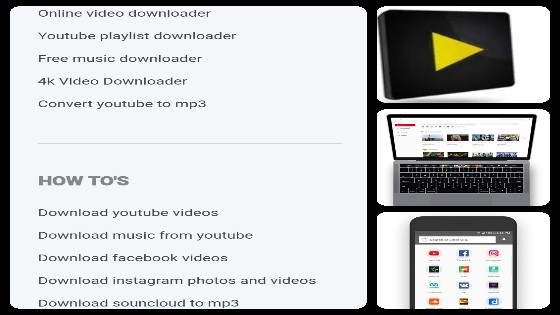
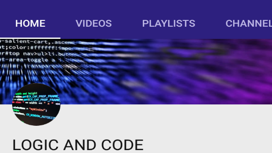
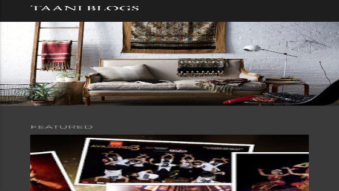
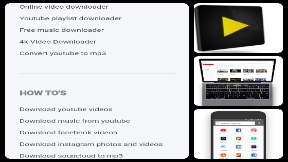
Scratched Diary=Written by Vaibhav Singh Bisht:)
1.Woh Mujhse Kehte Hai Ki Tum Kar Nahi Paoge, Woh Mujhpe Haste Hai Ki Tum Jeet Nahi Paoge. Mujhe Mere Hausle Ki Udaan Se Yaari Thi, Meri Soch Unki Koshisho Pe Bhari Thi. Mazboot Mere Kadam, Woh Dard Me Jiye Sitam, Saath Jo Kuch Yaar, Bas Apne Ab Sapno se Pyaar. Aage Ki Manzil Aur Aage Ka Safar, Mushkilo Se Mulaakat Aur Dushmano Pe Kehar. Mera Darr Mere Haath me, Meri Kamzori Mere Sath Me.
2.Jannat Ki Talaash Me Woh Jehanum Piche Karte Jaa Rahe. Woh Bacho Pe Goli Chalake Shahadat Ki Baat Kar Rahe.
3.Aaj Asmaan Ka Rang Zyada Gehra Hai, Lagta Hai Kissi Bahut Bade Badal Ne, Aaj Asmaan Ko Ghera Hai.
4.Jinke Ghar Me Ladaiya Zyada Hoti Hai, Woh Kaanch Ke Bartan Kam Rakha Karte Hai.
5.Uski Baaton Me Toh Sab Kho Jaatien Hai, Mujhe Toh Uski Baaton Me Rehna Hai.
6.Mausam Thora Bheega Bheega Sa Hogaya Hai, Lagta Hai Unko Yaad Karke Aaj Woh Khuda Phir Se Ro Raha Hai.
7.Baarish Ki Boondo Se Toh Sab Bheeg Jate Hai, Mujhe Toh Inme Tere Choone Ka Ehsaan Yaad Aata Hai.
8.Teri Zaroorat Thi Aaj Mere Aansu Chupane Ke Liye, Dekh Aaj Baarish Fir Se Hue Hai, Kissi Ka Gum Mitane Ke Liye.
9.Aaj Desh Ne Mujhe Pura Deh-La Diya. An-Dekha Kardiya Jammu Me Mare Jawaano Ki Shahadat, Aur Ek Larki Ne Pure Desh Ke Larko Ko Pighla Diya.
10.Woh Kehti Hai Ki Chalo Jao, Fir Mera Haath Pakad Leti Hai.
11.Mujhe Khud Se Baandh Kar, Khud Ko Mujhse Door Kar Deti Hai.
12.Jo Bharde Woh Marham Ban Jae Meri, Jo Naam Badnaam Karde Woh Pehchaan Ban Jae Meri, Mujhe Mehfillo Me Badnaam Karde, Mujhe Saare Aam Nilaam Karde, Bas Mujhe Khareed Bhi Woh Le, Bas Mujhe Bech Bhi Woh Dey..
13.Zindagi Mujhse Thak Chuki Hai, Mujhe Gira Gira Ke Darr Chuki Hai, Mai Khada Fir Apne Kadmo Me Hojata Hu. Mai Sapne Ke Liye Fir Ladd Jata Hu. Nakaamyab Log Mujje Nahi Dikhte, Choti Soch Wale Log Mujhse Ab Nahi Bolte.
14.Uski Mohabbat Me Mujhe Darr Ishq Khatam Hone Ka Nahi, Par Uski Mohabbat Se Fanah Hojane Ka Hai.
15.Meri Zindagi Ka Woh Ek Hissa, Meri Kahani Ka Woh Ek Qissa. Woh Dhoondh Lena Chahti Mujhko, Mai Khojata Uski Aankhon Me Yun, Ki Hosh Mujhe Fir Sapno Me Aata Hai. Ki Sukoon Mujhe Fir Uski Baahon Me Aata Hai.
16.Hum Unko Zindagi Me Nahi Rakhte Jinko Hum Pasand Nahi Karte Hai. Kyuki Hum Abhi Bhi Jeb Me Paiso Se Zyada Izzat Leke Chalte Hai.
17.Chaand Ko Dekh Kar Aaj Aankhien Thori Nam Hai, Umeed Roshni Ki Tarah Aasman Me Dhoond Raha, Aur Raat Amaavas Ki Aur Aaj Taare Bhi Kam Hai.
18.Haan Galat Hoon Mai Jo Sochta Hu, Jo Guftagu Hoti Thi Jo Woh Ab Mumkin Nahi, Kyuki Ab Zaroorat Tujhe Uski Meri Nahi. Maan Liya Maine Ki Tera Samay Bat Gaya Hai, Par Kaise Maan Lu Ki Ab Waqt Pe, Yaad Tak Bhi Nahi Aati Tujhe Meri.
19.Woh Zindagi Se Jitna Door, Sapno Me Utna Pass Aane Lagi. Mere Khwabo Me Woh Pakad Banae, Jaise Hi Meri Zindagi Se Jaane Lagi.
20.Nazdeek Sapno Me, Aur BadNaseeb Zindagi Me Kar Diya. Jaane Kis Raat Ke Intzaar Me, Mera Har Din Lamba Kar Diya.
21.Bezubaan Baaton Se, Bebuniyaad Waadien Hue. Beintehaan Ishq Karke, Behadh Hum Roe.
22.Woh Hume Chingari Samjh Ke Aag Jalane Ki Koshish Kar Rahe The, Humne Aag Banke Unka Haath Hi Jala Diya.
23.Kaafiro Ki Mehfil Me Charcha Jab Ho Humari, Toh Nazar Jhuka Lena. Kyuki Tumhi Hoge Woh Jiska Naseeb Mai Nahi Honga.
24.Fitrat Me Dhoke Ka Naqaab Rakhte Hai Woh, Aur Sach Bolne Ke Waadien Kiya Karte Hai Woh.
25.Din Me Ek Safar Tha Jo Raaton Me Pura Kar Raha Tha. Jo Hakikat Me Jhooth Lagta Usko Sapno Me Pura Kar Raha Tha.
26.Sau Ajnabi Ki Sau Galiyaan Manjur Hai, Par Ek Apna Bhi Rooth Jaae Toh Jeena Mushkil Lagta Hai.
27.Woh Khoobsurat Lagti Hai Mujhe, Isliye Nahi Ki Woh Sach Me Hai, Balki Isliye Kyuki Woh Khud Ko Maanti Nahi Ki Woh Khoobsurat Hai.
28.Kissi Ko Itna Bebas Mat Karo, Ki Woh Kuch Khone Ka Darr Chodh De. Kissi Ko Itna Majboor Mat Karna, Ki Woh Tumhe Kissi Layak Na Chodhe.
29.Pareshaani Meri Koi Hal Karde, Sawalo Ko Mere Uljhan Karde. Jis Duniya Me Kho Baitha Hu, Us Duniya Se Nikalne Ka Raasta Band Karde.
30.Hara Nahi Hu, Saasien Baaki Hai. Raasta Bahut Mushkil Hai. Par Ruka Nahi Hu, Kyuki Abhi Umeed Baaki Hai.
31.Woh Kehte Hai Ki Nahi Karpaoge, Aur Mai Bas, Kaise Laga Deta Hu Unke Jawaab Ke Aage. "Kaise Nahi Karpaunga."
32.Woh Mujhe Haarte Hue Dekhna Chahte Hai, Aur Mai Apni Jeet Pe Unka Chehra.
33.Woh Dharam Bech Kar Siyasat Kharidna Chahte Hai, Woh Kaafir Hi Hai, Jo Bhagwan Ko Dil Me Nahi, Mandir Me Rakhna Chahte Hai.
34.Zindagi Yeh Poochta Nahi Aapse Ki Kya Jaana Chahogi Khud Ko, Woh Bas Ek Kahani Kar Deta Hai Aapki Zindagi, Jiska Shirshak Yahi Hota Hai Ki Aap Kon Ho.
35.Hum Unko Majboor Samjhte The, Ki Woh Waadien Pura Nahi Hue. Hume Kya Maloom Tha, Hum Us Waadien Ke Layak Nahi The.
36.Kissi Ke Jaane Se Ab Koi Gum Nahi Hoga, Dekh Lia Hai Yeh Sab Itni Baar, Ki Firse Dil Tootne Pe Ab Kuch Mehsoos Nahi Hoga.
37.Yaadasht Kamzor Hori Hai Meri, Teri Yaadien Kam Aati Hai. Par Abhi Bhi Kuch Lamhe Hai, Jinki Yaad Se Aankhien Bhar Jaati Hai.
38.Shaant Hai Woh Aaj, Kissi Ke Bolne Ka Intzaar Kar Raha. Samjh Nahi Aara Usko, Isliye Woh Sirf Samjhane Ka Natak Kar Raha.
39.Chahe Baatien Humari Kam Hojae, Par Dooriyan Kam Nahi Hogi. Chahe Zindagi Me Se Tum Kam Hojao, Par Ehmiyat Tumhari Kam Nahi Hogi.
40.Aarzoo Hai Ki Unhe Maloom Hojae, Ki Mohabbat Me Koi Hidayat Nahi Hoti. Aur Kaash Unhe Yeh Samjh Aajae, Jitni Mohabbat Hai Utni Meri Lafzo Se Baayan Nahi Hoti.
41.Kehta Hu Kuch Jhooth, Karlena Uspe Yakeen, Ab Mohabbat Nahi Hai Tumse, Naa Hi Lagti Ho Ab Utni Haseen. Kabhi Hue Thi Woh Chahhat, Kabhi Thi Tujhme Koi Baat, Aaj Kuch Bacha Hai Nahi, Baaton Ke Saath Beet Gayi Hai Raat. Ab Mujhe Tumse Woh Mohabbat Hai Nahi. Kehta Hu Kuch Jhooth, Karlena Yakeen.
41.Woh Aap Karke Be-Izzat Kardete Hai, Woh Tu Karke Dil Jeet Lete Hai, Woh Mere Yaar Hi Hai, Jo Mere Liye Kuch Bhi Kar-Guzarte Hai.
42.Ek Qatra Rooh Ka Tumhare, Jab Meri Rooh Ko Chua. Paimana Bhar Ke Dard, Shabab-e-Dil Hua.
43.Muqadar Me Saath Nahi Toh Mujhe Yeh Ishq Nahi Chahiye. Armaano Ko Banane Ke Liye Umeed Nahi Toh Mujhe Yeh Jhooth Nahi Chahiye. Noor-E-Husn Unka Iss Qadr Sar Par Chadha Hai. Ki Jab Woh Meri Duniya Me Nahi Toh Mujhe Is Qayanat Me Koi Jagah Nahi
Chahiye.44.Jhootha Hi Farak Dikha Dena, Mushkil Ki Ibtida Kara Dena. Hum Gunah Tera Nahi Samjhenge. Bas Bewafai Ka Koi Ilzaam Na Laga Dena.
45.Istemaal Humara Logo Ne Kara, Aur Humne Uff Tak Na Ki. Door Humko Unhone Tab Tak Hi Rakha, Jab Tak Unhe Humari Koi Zaroorat Na Thi.
46.Apne Khilaf Baatien Mai Aksar Khamoshi Se Sunta Hoon, Jawab Unke Sawaalon Ka Mai Waqt Ko Dene Deta Hoon.
47.Woh Bahut Alag Thi Baakiyo Se, Paani Ho Sakti Thi Par Halak Sookha Gayi, Aag Ho Sakti Thi Par Andhera Kar Gayi. Khushiyon Ka Ghar Ban Sakti Thi, Par Gammo Ka Kabristan Bana Gayi. Adhoori Zindagi Ko Sawaar Sakti Thi, Par Qaafila Zindagi Ka Ujaad Gayi. Mai Kehta Hu Bahut Alag Hai Woh Sab Se, Farishta Ban Jane Ka Hunar Rakhti Thi, Par Majboor Maut Ki Chahat Ke Liye Kar Gayi.
48.Darr Lagta Hai Sawaal Karne Se, Kahin Jawab Phir Se Dil Na Tod Dey. Jab Umeed Hai Wahi Baat Hone Ki, Toh Fir Us Sawaal Ko Hi Chodh Dey.
49.Mujhse Has Kar Kehti Hai, Ki Humara Kuch Nahi Hoga. Mai Bhi Muskara Ke Kehdeta Hu, Chaliye Dekha Jaega.
50.Meri Mohabbat Ke Lafz Par, Woh Mujhe Dekhkar, Dil Todne Wali Kardeti Hai Baat. Aur Mai Aksar Muskara Ke Kehta Hu, Aankh Dikhati Hai Madar J**T.
51.Aaj Khushi Mujhme Dikh Rahi Hai, Haseen Galti Aaj Fir Kissi Se Hue Hai. Aaj Fir Kissi Ne Hum Dono Ko Dekhar, Socha Ki Kuch Chal Raha Hai Kya? Aaj Udaasi Mujhme Dikh Rahi Hai, Haseen Galti Aaj Fir Kissi Se Hue Hai.
52.Chup Rehti Ho Aajkal, Kis Soch Me Khoe Rehti Ho? Kon Raaz Dil Me Hi Daba Rakhti Ho.
53.Kaagaz Ki Duniya Ek Pal Me Raakh Hogayi, Jab Usne Kaha Tumse Toh Mohabbat Kabhi Hogi Nahi.
54.Baith Ke Mil Mujhse Ek Din, Haathon Me Haath Lene De. Jhuki Palkon Pe Mere Sawaal Rakhne De, Hothon Ko Tere Chup Kardunga. Mere Alfaazo Ko Dil Se Sunkar Toh Dekh.
55.Waqt Hogaya Hai Itna Door RehKar, Mil Baith Ab Baat Kab Karogi? Hotho Pe Ab Zikar Ho Mera, Yaadon Me Kab Tak Rakhogi?
56.Achank Se Ajnabee Kyu Karti Ho, Nafrat Hai Ya Fitrat Hi Aisi Rakhti Ho?
57.Kaash Mai Keh Sakta, Ki Kaise Lagta Hai. Jab Tum Aisa Karti Ho. Par Bayan Nahi Kar Pata, Kyuki Tum Meri Zindagi Me, Esi Ehmiyat Rakhti Ho.
58.Mai Chaar Kadam Chalunga, Do Kadam Saath Dedena. Mai Jab Tumse Door Jau, Mera Bas Haath Pakad Lena.
59.Khuda Ke Kehne Pe Tujhse Ishq Karna Chodh Dunga, Par Woh Din Nahi Aaega, Kyuki Us Din Mai Nastik Honga.
60.Jo Mere Yaar Ko Nahi Jaante, Woh Aksar Meri Yaari Pe Shak Karte Hai. Jo Khafa Khud Se Hote Hai, Woh Aksar Manae Jaane Ki Umeed Dusro Se Karte Hai.
61.Tumhe Aaj Bhi Yaad Rakhta Hoon, Galti Na Dohraane Ki Chahat Rakhta Hoon.
62.Chali Jaana Firse Ek Baar Wapas Laut Kar, Tere Liye Aaj Bhi Darwaze Khule Rakhe Hai. Raahon Me Nazar Rakhte Hai Hum, Aur Khidki Pe Tumhara Intzaar Rakhte Hai.
63.Nashe Me Choor Tha Unki Madhoshi Me, Nasha Utra Bhi Na Tha Ki Pata Chala Woh Jaam Kissi Aur Ka Tha.
64.Hum Kya Kahe Unse Jo Unki Naraazgi Kam Hojae, Chalo Chodho, Naraazgi Toh Nafrat Ne Janam Di Hai.
65.Khair Koi Khalal Baaki Na Reh Gayi Ho Toh Aaj Alvida Kehdu? Mushkil Hai Kal Ya Kissi Aur Din Milna. Toh Aaj Teri Ulfat Ko Bhi Azaad Kardu?
66.Yeh Kaisi Khalish Aagae Hai Nazdeekiyon Me Humare, Ki Aaj Yeh Aankhien Tujhe Dekhne Ke Liye Fariyaad Mangti Hai.
67.Kaash Meri Mohabbat Qayamat Hoti, Dard Chahe Duniya Bhar Ka Hi Sahi, Kam Se Kam Mere Kismat Me Toh Likhi Hoti.
68.Humne Ek Baar Har Gum Pe Hasne Ka Socha, Unko Yeh Humari Khushi Lagi, Aur Woh Is Par Bhi Jal Baithe.
69.Ek Shabd Puri Kahani Badal Dete Hai, Aur Ek Kahani Saare Shabdo Ko Be-Matlab Kar Deti Hai.
70.Kahani Ek Reh Gayi Hai Adhoori. Beech Me Jo Padhna Chor Diya Maine. Ab Kya Karu Us Kahani Ka, Jisko Ab Padhna Nahi Hai Zaroori.